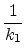
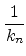
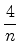
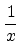
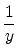
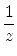

is a positive integer.
In 1800
B.C., egyptian mathematicians represented rational numbers between 0
(exclusive) and 1
(inclusive) as finite sums of the form
 + ... + ,
where all the denominators were distinct positive integers.
In 1948
A.C., Paul Erdos and Ernst G. Straus formulated the following conjecture about the unit fractions: for all positive integer n  2
, the rational fraction 4/n
can be expressed as the sum of three unit fractions. In other words, it is believed that for each n
greater than 1
, there exist positive integers x
, y
and z
such that
2
, the rational fraction 4/n
can be expressed as the sum of three unit fractions. In other words, it is believed that for each n
greater than 1
, there exist positive integers x
, y
and z
such that
 =  +  + 
The conjecture has been tested for all
n < 1014
. It remains unknown if the conjecture is a theorem or not.
Given an integer n 2
, your job is to find three positive integers x, y, z
whose values verify the Erdos-Straus conjecture.
The problem input consists of several cases, each one defined in a line that contains an integer number n
such that (
2  n < 104
).
n < 104
).
A line with n = 0
indicates the end of the input.
For each case in the input, you must print a line with numbers x
, y
and z
(separated by spaces) such that
= + +
and
0 < x, y, z < 1016
.
You can print any solution. It's guaranteed that every case in the input has a solution such that
0 < x, y, z < 1016
.
10
2
7
0
5 6 30
1 2 2
4 4 14
Colombia'2008